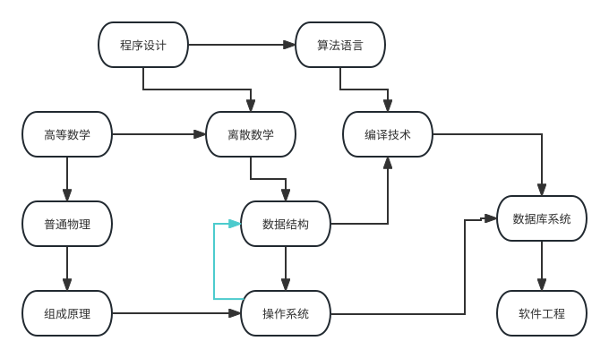
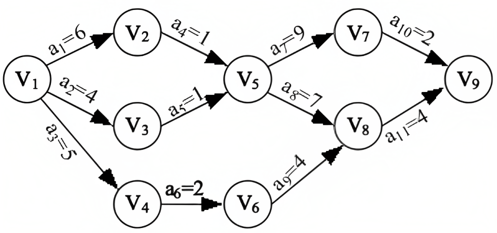
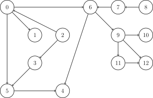

OI Wiki · prijevod · Teorija grafovaOI Wiki · translation · Graph theory
Topološko sortiranjeTopological sorting
Sadržaj
Definicija
Topološko sortiranje (topological sorting) rješava problem kako poredati sve vrhove usmjerenog acikličkog grafa.
Postupak možemo opisati primjerom sastavljanja rasporeda kolegija po semestrima na fakultetu. Recimo da među kolegijima imamo: „Programiranje”, „Algoritamski jezici”, „Viša matematika”, „Diskretna matematika”, „Prevođenje programa”, „Opća fizika”, „Strukture podataka”, „Baze podataka” itd. Prema primjeru, kad želimo učiti „Strukture podataka”, najprije moramo položiti „Diskretnu matematiku”; nakon tog kolegija stekli smo preduvjet za „Prevođenje programa”. Naravno, „Prevođenje programa” ima i raniji preduvjet, „Algoritamske jezike”. Ti su kolegiji poput vrhova \(u\), a usmjereni bridovi \((u,v)\) među njima poput redoslijeda učenja kolegija. Kad studentska služba rasporedi te kolegije tako da raspored poštuje logičke ovisnosti, to je upravo postupak topološkog sortiranja.

No što ako jednog dana nastavnik koji slaže raspored zadrijema i kaže da za „Strukture podataka” treba prvo položiti „Operacijske sustave”, a preduvjet za „Operacijske sustave” su opet „Strukture podataka”: što onda učiti prvo (ne razmatramo istodobno učenje)? Između „Struktura podataka” i „Operacijskih sustava” pojavio se ciklus; studenti očito ne mogu odrediti što trebaju učiti prvo, pa topološko sortiranje nije moguće. Ako u usmjerenom grafu postoji ciklus, ne možemo ga topološki sortirati.
Stoga možemo reći: u DAG-u (usmjerenom acikličkom grafu) vrhove poredamo linearno tako da za svaki usmjereni brid \((u,v)\) od vrha \(u\) do \(v\) vrh \(u\) dolazi prije \(v\).
Također, za zadani DAG, ako postoji brid od \(i\) do \(j\), kažemo da \(j\) ovisi o \(i\). Ako postoji put od \(i\) do \(j\) (\(j\) je dostižan iz \(i\)), kažemo da \(j\) neizravno ovisi o \(i\).
Cilj topološkog sortiranja jest poredati sve vrhove tako da vrhovi koji dolaze ranije ne ovise o vrhovima koji dolaze kasnije.
AOV mreža
U svakodnevnom životu veliki projekt možemo promatrati kao skup nekoliko potprojekata među kojima nužno postoji određeni redoslijed: neki potprojekti mogu početi tek nakon što se drugi dovrše.
Redoslijed među potprojektima prikazujemo usmjerenim grafom; odnosi prethođenja među potprojektima usmjereni su bridovi. Takav usmjereni graf naziva se mreža aktivnosti na vrhovima, tj. AOV mreža (Activity On Vertex Network). AOV mreža nužno je usmjereni aciklički graf, tj. nema ciklusa. Za razliku od DAG-a, aktivnosti AOV mreže predstavljene su na vrhovima. (Slika gore primjer je AOV mreže.)
U AOV mreži vrhovi predstavljaju aktivnosti, a lukovi odnose prioriteta među aktivnostima. U AOV mreži ne smije biti ciklusa; tada možemo naći niz vrhova u kojem su prethodne aktivnosti svake aktivnosti poredane ispred njezina vrha. Takav niz naziva se topološki niz (topološki niz AOV mreže nije jedinstven), a postupak konstrukcije topološkog niza iz AOV mreže naziva se topološko sortiranje. Stoga se topološko sortiranje može objasniti i kao poredak svih aktivnosti AOV mreže u niz tako da su prethodne aktivnosti svake aktivnosti poredane ispred nje (topološko sortiranje AOV mreže također nije jedinstveno).
-
Prethodna aktivnost: aktivnost na početku usmjerenog brida naziva se prethodnom aktivnošću aktivnosti na kraju (aktivnost se može izvesti tek kad su sve njezine prethodne aktivnosti dovršene).
-
Sljedeća aktivnost: aktivnost na kraju usmjerenog brida naziva se sljedećom aktivnošću aktivnosti na početku.
Postojanje ciklusa u AOV mreži provjeravamo konstrukcijom topološkog niza: gledamo sadrži li sve vrhove.
Koraci konstrukcije topološkog niza
- Iz grafa odaberemo vrh ulaznog stupnja nula.
- Ispišemo taj vrh i iz grafa izbrišemo njega i sve njegove izlazne bridove.
Ponavljamo ta dva koraka dok ne ispišemo sve vrhove (topološko sortiranje je dovršeno) ili dok u grafu ne ostane vrh ulaznog stupnja nula; u tom slučaju graf ima ciklus, topološko sortiranje se ne može dovršiti i zapadamo u zastoj (deadlock).
Kritični put i AOE mreža
AOV mreži odgovara AOE mreža (Activity On Edge Network), tj. mreža u kojoj bridovi predstavljaju aktivnosti. AOE mreža je težinski usmjereni aciklički graf u kojem vrhovi predstavljaju događaje, a lukovi trajanje aktivnosti. AOE mreža obično služi za procjenu vremena dovršetka projekta. AOE mreža mora biti aciklička, imati jedinstveni početni vrh ulaznog stupnja nula (izvor) i jedinstveni završni vrh izlaznog stupnja nula (ponor).

Neke aktivnosti u AOE mreži mogu se izvoditi paralelno, pa je najkraće vrijeme dovršetka cijelog projekta duljina najduljeg puta aktivnosti od početnog do završnog vrha (duljina puta ovdje znači zbroj trajanja aktivnosti na putu, tj. zbroj težina lukova, a ne broj lukova na putu). Budući da projekt zahtijeva dovršetak svih aktivnosti, najdulji put aktivnosti ujedno je kritični put i određuje ukupno vrijeme dovršetka projekta.
Osnovni pojmovi AOE mreže
-
Aktivnost: u AOE mreži luk predstavlja aktivnost. Težina luka predstavlja trajanje aktivnosti; aktivnost počinje nakon što se pokrene njezin prethodni događaj (početak luka).
-
Događaj: u AOE mreži vrh predstavlja događaj; događaj se pokreće kad su dovršene sve njegove prethodne aktivnosti (lukovi koji ulaze u taj vrh).
-
Najranije vrijeme događaja (vrha) \(v_i\): najranije moguće vrijeme nastupa tog događaja, označeno \(ve(i)\); određuje najranije vrijeme početka aktivnosti koje počinju u tom vrhu; očito je najranije vrijeme izvora 0. Budući da događaj zahtijeva dovršetak svih prethodnih aktivnosti, jednako je maksimumu duljina putova od početnog vrha do tog vrha, rekurzivno: \(ve(i) = \max\{ve(j) + val^j_i ~\vert~ j \in pre_i\}\), gdje je \(val^j_i\) težina brida od j do i (tj. trajanje aktivnosti od j do i), a \(pre_i\) skup svih prethodnih događaja od i.
-
Najkasnije vrijeme događaja (vrha) \(v_i\): najkasnije vrijeme nastupa tog događaja koje ne odgađa cijeli projekt, označeno \(vl(i)\); određuje najkasnije vrijeme početka svih aktivnosti koje završavaju u tom stanju; jednako je minimumu najkasnijih vremena početka svih sljedećih aktivnosti događaja, tj. \(vl(i) = \min\{vl(j) - val^i_j ~\vert~ j \in nxt_i\}\), gdje je \(val^i_j\) težina brida od i do j (tj. trajanje aktivnosti od i do j), a \(nxt_i\) skup svih sljedećih događaja od i.
-
Najranije vrijeme početka aktivnosti (luka) \((u, v)\): najranije moguće vrijeme početka te aktivnosti, označeno \(e(u,v)\); očito je jednako najranijem vremenu njezina prethodnog događaja, tj. \(e(u,v)=ve(u)\).
-
Najkasnije vrijeme početka aktivnosti (luka) \((u, v)\): najkasnije vrijeme početka aktivnosti koje ne odgađa cijeli projekt, označeno \(l(u,v)\); jednako je najkasnijem vremenu sljedećeg događaja minus trajanje aktivnosti (težina), tj. \(l(u,v)=vl(v)-val^u_v\), gdje je \(val^u_v\) težina brida od u do v (tj. trajanje aktivnosti od u do v).
-
Kritični put: duljina najduljeg puta od izvora do ponora u AOE mreži.
-
Kritična aktivnost: aktivnost na kritičnom putu; njezino najranije i najkasnije vrijeme početka su jednaki.
Rekurzivno računanje najranijih i najkasnijih vremena
Računamo u topološkom poretku: najranija vremena rekurzivno od početka prema kraju, najkasnija vremena od kraja prema početku, prema formulama iz odjeljka Osnovni pojmovi AOE mreže.
Kahnov algoritam
Postupak
U početnom stanju skup \(S\) sadrži sve vrhove ulaznog stupnja \(0\), a \(L\) je prazna lista.
Svaki put iz \(S\) uzmemo vrh \(u\) (bilo koji) i stavimo ga u \(L\), zatim izbrišemo sve bridove \((u, v_1), (u, v_2), (u, v_3) \cdots\) iz \(u\). Ako brisanjem brida \((u, v)\) ulazni stupanj vrha \(v\) postane \(0\), stavimo \(v\) u \(S\).
Ponavljamo postupak dok skup \(S\) ne postane prazan. Provjerimo ima li u grafu još bridova: ako ima, graf sigurno ima ciklus; inače vraćamo \(L\), a redoslijed vrhova u \(L\) rezultat je konstrukcije topološkog niza.
Pogledajmo najprije pseudokod s Wikipedije
Implementacija
L ← Empty list that will contain the sorted elements
S ← Set of all nodes with no incoming edges
while S is not empty do
remove a node n from S
insert n into L
for each node m with an edge e from n to m do
remove edge e from the graph
if m has no other incoming edges then
insert m into S
if graph has edges then
return error (graph has at least one cycle)
else
return L (a topologically sorted order)
Srž koda je održavanje skupa vrhova ulaznog stupnja 0.
Za ilustraciju pogledajte sliku

Rezultat sortiranja je: 2 -> 8 -> 0 -> 3 -> 7 -> 1 -> 5 -> 6 -> 9 -> 4 -> 11 -> 10 -> 12
Vremenska složenost
Za graf \(G = (V, E)\) već pri inicijalizaciji skupa \(S\) vrhova ulaznog stupnja \(0\) moramo obići cijeli graf i provjeriti svaki brid, što je složenost \(O(E+V)\). Zatim obrađujemo taj skup, što očito također zahtijeva \(O(E+V)\) vremena.
Ukupna je vremenska složenost stoga \(O(E+V)\)
Implementacija
int n, m;
vector<int> G[MAXN];
int in[MAXN]; // ulazni stupanj svakog vrha
bool toposort() {
vector<int> L;
queue<int> S;
for (int i = 1; i <= n; i++)
if (in[i] == 0) S.push(i);
while (!S.empty()) {
int u = S.front();
S.pop();
L.push_back(u);
for (auto v : G[u]) {
if (--in[v] == 0) {
S.push(v);
}
}
}
if (L.size() == n) {
for (auto i : L) cout << i << ' ';
return true;
}
return false;
}
from collections import defaultdict, deque
def topo_sort(graph):
lst = []
in_degree = defaultdict(int)
for u in graph:
for v in graph[u]:
in_degree[v] += 1
s = deque([u for u in graph if in_degree[u] == 0])
while s:
u = s.popleft()
lst.append(u)
for v in graph.get(u, []):
in_degree[v] -= 1
if in_degree[v] == 0:
s.append(v)
return None if any(in_degree.values()) else lst
DFS algoritam
Implementacija
using Graph = vector<vector<int>>; // lista susjedstva
struct TopoSort {
enum class Status : uint8_t { to_visit, visiting, visited };
const Graph& graph;
const int n;
vector<Status> status;
vector<int> order;
vector<int>::reverse_iterator it;
TopoSort(const Graph& graph)
: graph(graph),
n(graph.size()),
status(n, Status::to_visit),
order(n),
it(order.rbegin()) {}
bool sort() {
for (int i = 0; i < n; ++i) {
if (status[i] == Status::to_visit && !dfs(i)) return false;
}
return true;
}
bool dfs(const int u) {
status[u] = Status::visiting;
for (const int v : graph[u]) {
if (status[v] == Status::visiting) return false;
if (status[v] == Status::to_visit && !dfs(v)) return false;
}
status[u] = Status::visited;
*it++ = u;
return true;
}
};
from enum import Enum, auto
class Status(Enum):
to_visit = auto()
visiting = auto()
visited = auto()
def topo_sort(graph: list[list[int]]) -> list[int] | None:
n = len(graph)
status = [Status.to_visit] * n
order = []
def dfs(u: int) -> bool:
status[u] = Status.visiting
for v in graph[u]:
if status[v] == Status.visiting:
return False
if status[v] == Status.to_visit and not dfs(v):
return False
status[u] = Status.visited
order.append(u)
return True
for i in range(n):
if status[i] == Status.to_visit and not dfs(i):
return None
return order[::-1]
Vremenska složenost: \(O(E+V)\), prostorna složenost: \(O(V)\)
Dokaz ispravnosti
Promotrimo graf: ako nakon brisanja nekog vrha ulaznog stupnja \(0\) novi graf ima topološki poredak, onda ga sigurno ima i izvorni graf. Obratno, ako izvorni graf ima topološki poredak, ima ga i graf nakon brisanja.
Primjene
Topološkim sortiranjem možemo provjeriti ima li graf ciklus, a i je li graf lanac. Topološko sortiranje služi i za nalaženje kritičnog puta u AOE mreži, tj. procjenu najkraćeg vremena dovršetka projekta.
Leksikografski najveći/najmanji topološki poredak
Dovoljno je red u Kahnovu algoritmu zamijeniti prioritetnim redom implementiranim max-heapom/min-heapom; ukupna je vremenska složenost tada \(O(E+V \log{V})\).
Zadaci
CF 1385E: konstrukcija pomoću topološkog sortiranja.
Luogu P1347: zadatak-predložak za topološko sortiranje.
Literatura
- Discrete Mathematics and Its Applications (kinesko izdanje). ISBN:9787111555391
- Topological sorting - Wikipedia
- 数据结构第九讲（图：拓扑排序，关键路径，最短路径）- Zhihu (Strukture podataka, 9. predavanje: grafovi – topološko sortiranje, kritični put, najkraći put)
Contents
Definition
Topological sorting solves the problem of how to order all the vertices of a directed acyclic graph.
We can describe the process with the example of scheduling university courses for each semester. Say the university curriculum contains: "Programming", "Algorithmic Languages", "Advanced Mathematics", "Discrete Mathematics", "Compiler Techniques", "General Physics", "Data Structures", "Database Systems", and so on. According to the schedule in the example, when we want to study "Data Structures" we first have to pass "Discrete Mathematics"; after finishing that course we have the prerequisite for "Compiler Techniques". Of course, "Compiler Techniques" has an even earlier prerequisite, "Algorithmic Languages". These courses are like vertices \(u\), and the directed edges \((u,v)\) between them are like the order in which the courses are taken. When the registrar arranges these courses so that the timetable respects the logical dependencies, that is exactly the process of topological sorting.
But what if one day the teacher making the schedule dozes off and says that to study "Data Structures" you first need "Operating Systems", while the prerequisite of "Operating Systems" is in turn "Data Structures"; which one should be studied first (not considering studying both at the same time)? Here a cycle appears between "Data Structures" and "Operating Systems"; the students clearly cannot figure out what to study first, so a topological sort is impossible. If a directed graph contains a cycle, we cannot topologically sort it.
So we can say: in a DAG (directed acyclic graph) we order the vertices linearly so that for every directed edge \((u,v)\) from vertex \(u\) to \(v\), \(u\) comes before \(v\).
Also, given a DAG, if there is an edge from \(i\) to \(j\) we say that \(j\) depends on \(i\). If there is a path from \(i\) to \(j\) (\(j\) is reachable from \(i\)), we say that \(j\) depends indirectly on \(i\).
The goal of topological sorting is to order all the vertices so that a vertex that comes earlier does not depend on a vertex that comes later.
AOV network
In everyday life a large project can be seen as a set of several subprojects, and there is necessarily some order among them: some subprojects can only start after certain other subprojects have been completed.
We represent the ordering among the subprojects with a directed graph in which the precedence relations are directed edges. Such a directed graph is called an activity-on-vertex network, i.e. an AOV network (Activity On Vertex Network). An AOV network is necessarily a directed acyclic graph, i.e. it has no cycles. Unlike a DAG, the activities of an AOV network are represented on the vertices. (The picture above is an AOV network.)
In an AOV network the vertices represent activities and the arcs represent precedence relations among the activities. An AOV network must not contain a cycle; then we can find a sequence of vertices such that the predecessor activities of every activity come before its vertex. Such a sequence is called a topological sequence (the topological sequence of an AOV network is not unique), and the process of constructing a topological sequence from an AOV network is called topological sorting. Hence topological sorting can also be explained as arranging all activities of an AOV network in a sequence such that the predecessor activities of every activity come before it (the topological sort of an AOV network is not unique either).
-
Predecessor activity: the activity at the tail of a directed edge is called a predecessor activity of the activity at its head (an activity can only be carried out after all of its predecessors have been completed).
-
Successor activity: the activity at the head of a directed edge is called a successor activity of the activity at its tail.
To check whether an AOV network has a cycle, construct a topological sequence and see whether it contains all the vertices.
Steps for constructing a topological sequence
- Pick a vertex with in-degree zero from the graph.
- Output this vertex and delete it and all of its outgoing edges from the graph.
Repeat the two steps above until all vertices have been output (the topological sort is complete), or until there is no vertex with in-degree zero left in the graph; in that case the graph has a cycle, the topological sort cannot be completed, and we are in a deadlock.
Critical path and AOE network
Corresponding to the AOV network is the AOE network (Activity On Edge Network), i.e. a network in which the edges represent activities. An AOE network is a weighted directed acyclic graph in which the vertices represent events and the arcs represent the duration of activities. AOE networks are usually used to estimate the completion time of a project. An AOE network must be acyclic, and it has a unique starting vertex with in-degree zero (the source) and a unique finishing vertex with out-degree zero (the sink).
Some activities in an AOE network can be carried out in parallel, so the shortest time to complete the whole project is the length of the longest activity path from the starting vertex to the finishing vertex (the length of a path here means the sum of the durations of the activities on the path, i.e. the sum of the arc weights, not the number of arcs on the path). Since a project requires all of its activities to be completed, the longest activity path is also the critical path, and it determines the total completion time of the project.
Basic concepts of AOE networks
-
Activity: in an AOE network an arc represents an activity. The weight of the arc represents the duration of the activity; the activity starts after its predecessor event (the tail of the arc) is triggered.
-
Event: in an AOE network a vertex represents an event; an event is triggered when all of its predecessor activities (the arcs pointing into it) have been completed.
-
Earliest occurrence time of an event (vertex) \(v_i\): the earliest possible time at which the event can occur, denoted \(ve(i)\); it determines the earliest start time of the activities starting at this vertex; obviously the earliest time of the source is 0. Since an event requires all of its predecessor activities to be completed, it equals the maximum length of a path from the starting vertex to this vertex, recursively: \(ve(i) = \max\{ve(j) + val^j_i ~\vert~ j \in pre_i\}\), where \(val^j_i\) is the weight of the edge from j to i (i.e. the duration of the activity from j to i) and \(pre_i\) is the set of all predecessor events of i.
-
Latest occurrence time of an event (vertex) \(v_i\): the latest time at which the event can occur without delaying the whole project, denoted \(vl(i)\); it determines the latest start time of all activities ending in this state; it equals the minimum of the latest start times of all successor activities of the event, i.e. \(vl(i) = \min\{vl(j) - val^i_j ~\vert~ j \in nxt_i\}\), where \(val^i_j\) is the weight of the edge from i to j (i.e. the duration of the activity from i to j) and \(nxt_i\) is the set of all successor events of i.
-
Earliest start time of an activity (arc) \((u, v)\): the earliest possible time at which the activity can start, denoted \(e(u,v)\); obviously it equals the earliest occurrence time of its predecessor event, i.e. \(e(u,v)=ve(u)\).
-
Latest start time of an activity (arc) \((u, v)\): the latest time the activity can start without delaying the whole project, denoted \(l(u,v)\); it equals the latest occurrence time of its successor event minus the duration (weight) of the activity, i.e. \(l(u,v)=vl(v)-val^u_v\), where \(val^u_v\) is the weight of the edge from u to v (i.e. the duration of the activity from u to v).
-
Critical path: the length of the longest path from the source to the sink in the AOE network.
-
Critical activity: an activity on the critical path; its earliest start time equals its latest start time.
Computing the earliest and latest times recursively
Compute in topological order: the earliest times recursively from front to back, the latest times from back to front, using the formulas given in Basic concepts of AOE networks above.
Kahn's algorithm
Procedure
Initially, the set \(S\) contains all vertices with in-degree \(0\) and \(L\) is an empty list.
Each time, take a vertex \(u\) out of \(S\) (any one will do) and put it into \(L\), then delete all edges \((u, v_1), (u, v_2), (u, v_3) \cdots\) of \(u\). For an edge \((u, v)\), if the in-degree of \(v\) becomes \(0\) after deleting the edge, put \(v\) into \(S\).
Repeat the above until the set \(S\) is empty. Check whether any edge remains in the graph; if so, the graph must contain a cycle; otherwise return \(L\), and the order of the vertices in \(L\) is the resulting topological sequence.
Let us first look at the pseudocode from Wikipedia
Implementation
L ← Empty list that will contain the sorted elements
S ← Set of all nodes with no incoming edges
while S is not empty do
remove a node n from S
insert n into L
for each node m with an edge e from n to m do
remove edge e from the graph
if m has no other incoming edges then
insert m into S
if graph has edges then
return error (graph has at least one cycle)
else
return L (a topologically sorted order)
The core of the code is maintaining a set of vertices with in-degree 0.
See the following picture
The result of sorting it is: 2 -> 8 -> 0 -> 3 -> 7 -> 1 -> 5 -> 6 -> 9 -> 4 -> 11 -> 10 -> 12
Time complexity
For the graph \(G = (V, E)\), initializing the set \(S\) of vertices with in-degree \(0\) already requires traversing the whole graph and checking every edge, which costs \(O(E+V)\). Then the set is processed, which obviously also takes \(O(E+V)\) time.
Hence the total time complexity is \(O(E+V)\)
Implementation
int n, m;
vector<int> G[MAXN];
int in[MAXN]; // stores the in-degree of every vertex
bool toposort() {
vector<int> L;
queue<int> S;
for (int i = 1; i <= n; i++)
if (in[i] == 0) S.push(i);
while (!S.empty()) {
int u = S.front();
S.pop();
L.push_back(u);
for (auto v : G[u]) {
if (--in[v] == 0) {
S.push(v);
}
}
}
if (L.size() == n) {
for (auto i : L) cout << i << ' ';
return true;
}
return false;
}
from collections import defaultdict, deque
def topo_sort(graph):
lst = []
in_degree = defaultdict(int)
for u in graph:
for v in graph[u]:
in_degree[v] += 1
s = deque([u for u in graph if in_degree[u] == 0])
while s:
u = s.popleft()
lst.append(u)
for v in graph.get(u, []):
in_degree[v] -= 1
if in_degree[v] == 0:
s.append(v)
return None if any(in_degree.values()) else lst
DFS algorithm
Implementation
using Graph = vector<vector<int>>; // adjacency list
struct TopoSort {
enum class Status : uint8_t { to_visit, visiting, visited };
const Graph& graph;
const int n;
vector<Status> status;
vector<int> order;
vector<int>::reverse_iterator it;
TopoSort(const Graph& graph)
: graph(graph),
n(graph.size()),
status(n, Status::to_visit),
order(n),
it(order.rbegin()) {}
bool sort() {
for (int i = 0; i < n; ++i) {
if (status[i] == Status::to_visit && !dfs(i)) return false;
}
return true;
}
bool dfs(const int u) {
status[u] = Status::visiting;
for (const int v : graph[u]) {
if (status[v] == Status::visiting) return false;
if (status[v] == Status::to_visit && !dfs(v)) return false;
}
status[u] = Status::visited;
*it++ = u;
return true;
}
};
from enum import Enum, auto
class Status(Enum):
to_visit = auto()
visiting = auto()
visited = auto()
def topo_sort(graph: list[list[int]]) -> list[int] | None:
n = len(graph)
status = [Status.to_visit] * n
order = []
def dfs(u: int) -> bool:
status[u] = Status.visiting
for v in graph[u]:
if status[v] == Status.visiting:
return False
if status[v] == Status.to_visit and not dfs(v):
return False
status[u] = Status.visited
order.append(u)
return True
for i in range(n):
if status[i] == Status.to_visit and not dfs(i):
return None
return order[::-1]
Time complexity: \(O(E+V)\), space complexity: \(O(V)\)
Proof of correctness
Consider a graph: if after deleting some vertex with in-degree \(0\) the new graph can be topologically sorted, then so can the original graph. Conversely, if the original graph can be topologically sorted, so can the graph after the deletion.
Applications
Topological sorting can decide whether a graph has a cycle, and also whether a graph is a chain. Topological sorting can be used to find the critical path of an AOE network and estimate the shortest completion time of a project.
Lexicographically largest/smallest topological order
Just replace the queue in Kahn's algorithm with a priority queue implemented by a max-heap/min-heap; the total time complexity then becomes \(O(E+V \log{V})\).
Exercises
CF 1385E: a construction via topological sorting.
Luogu P1347: topological sorting template.
References
- Discrete Mathematics and Its Applications (Chinese edition). ISBN:9787111555391
- Topological sorting - Wikipedia
- 数据结构第九讲（图：拓扑排序，关键路径，最短路径）- Zhihu (Data Structures, Lecture 9: graphs – topological sorting, critical path, shortest path)